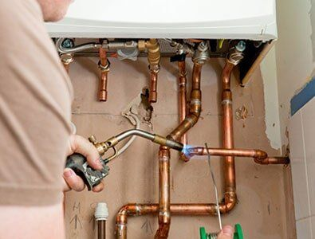

Residential Plumbing Contractors in Garland & Richardson, TX
Experienced Plumber in Garland, TX
Although clogged drains may start out as an inconvenience, they can be a sign of more serious problems. Drainage issues are a sign of possible pipe damage due to weather or tree roots interfering with the normal function of the pipe. It's essential to catch these problems early before irreversible damage occurs. If your clogged drain does end up being caused by a larger problem, Speake's Plumbing, Inc. is equipped for intensive pipe clearing with our pipe repair and pipe replacement services.
When you call on Speake's Plumbing for your residential plumbing needs, no matter how big or small the job is, we will fix it quickly and at a competitive price.
We offer:
- Bath and Kitchen Remodeling
- Drain Cleaning, Maintenance and Repair
- Electric Snake Service and pipe clearing
- Garbage Disposal repair and replacement
- Kitchen and bath fixture installation
- Rooter Service
- Sewer cleanout, repair and installation
- Underground leak and pipe repair
- Water Heater repair and replacement
- Water line repair and replacement
- And more
Whether it's an emergency or you're renovating your kitchen or bathroom, we are always on call to help you. Our Master Plumbers have the knowledge and experience to repair your busted pipes, maintain your water heater or install a new sewer system or that great new bathtub. No matter how big, small, or complicated your problem, our licensed and insured plumbers can fix it.
